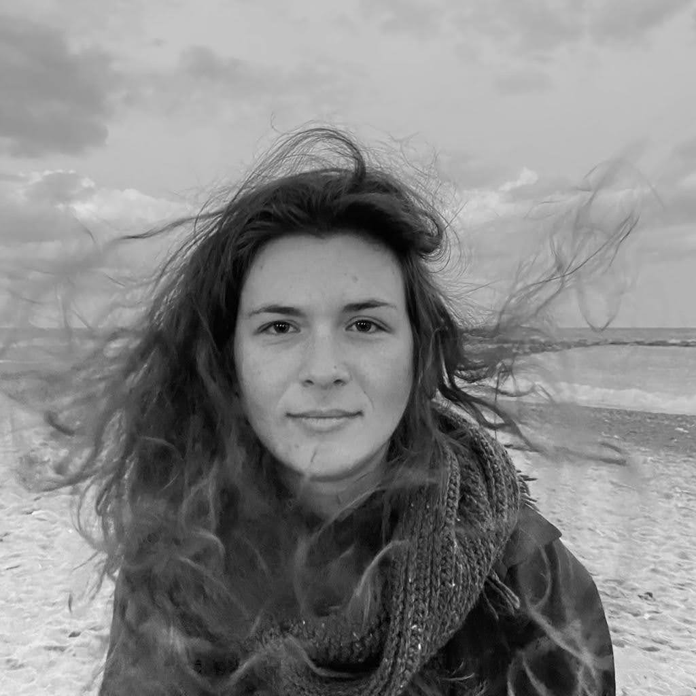

Evita Simaresi
Architect | Programmer
Athens | Barcelona
+34611555785
+306941577652 (WhatsApp/Viber)
Architect | Programmer
Athens | Barcelona
+34611555785
+306941577652 (WhatsApp/Viber)
2018
TUCer | Crete, Chania
freelance, Design of sponsors booklet and brand identity
• Diploma Thesis Project: Interactive architecture in schoolyards, what can children teach us? (10 /
10) | available in greek.
• Diploma work: iA as
Ai, artificial intelligence activates school grounds (10 / 10) | available in greek.
I designed and assessed an interactive installation tailored for school environments. Utilizing
Arduino
and digital fabrication, I crafted a responsive model capable of sensing and adapting to student
interactions. I conducted a school-based test, gathering to visualize Arduino data and explored
machine
learning applications for spatial expansion. This project honed my expertise in educational
technology,
research, and data analysis.
2014
Diploma | Athens, Greece
Upper secondary education | Direction: Technology
GPA: 17,9/20
programming | p5.js, arduino, C, Python, web (HTML, css, js), flask, flask-sql
advanced | Photoshop, AutoCAD, Rhino, Illustrator, SketchUp, Vray (SketchUp, Rhino) , digital fabrication
intermediate | Grasshopper, InDesign, Allegorithmic Bitmap2Material
beginner | Premiere Pro, Unreal Engine 4, ArcGis and ArcCatalog (version 9)
windows OS | Microsoft Office | Word, PowerPoint (advanced), Excel (basic)
february 2019
Tomb
of tomorrow | 3rd prize
organized by Architize
project Team: Philippos Photiadis, Ersi Vyrgioti, Haritina Trikka, Evita Simaresi
may 2021
Nodal Positions | Finalist
organized by School of Architecture, University Of Thessaly
project Team: Dimitra Kada, Marina Mparmpouni, Florentia Theochari, Evita Simaresi
june 2019
APOPLUS The Invisible Cities and the City Ports of the Ionian Sea:
visual art dialogues between Greek literature and Calvino | exhibition catalogue (p. 152),
Corfu
curation: Efrossyni Tsakiri | Professor: Socrates Yiannoudes, Doulaverakis Charalampos
project Team: Theochari F, Kada d. , Barbouni M., Chelidonis M. , Simaresi E.
may 2019
BAU_TUC_AUTO, Why BAUHAUS today; | Chania
curation: Kotsaki Amalia | Professor : Vazakas Alexandros, Doulaverakis Charalampos
project Team: Kada d. , Barbouni M., Chelidonis M. , Simaresi E.
july 2021
Wave 2021 | Architecture and landscapes of water
organized by Università Iuav di Venezia | Professor: Skoutelis N.
17 & 18 february 2017
Greek Space Generation Workshop
organized by Space Generation advisory Council
november 2019
Science and Technology day | TIE Lab,TUCrete
may 2019
BAU_TUC_AUTO, Why BAUHAUS today; | Chania
curation: Kotsaki Amalia | Professor : Vazakas Alexandros, Doulaverakis Charalampos
project Team: Kada d. , Barbouni M., Chelidonis M. , Simaresi E.
april 2016/2017
Open Day with Technical University of Crete | TUCrete
october 2015/2016
Science and Technology day | TUCrete
june 2015
Crete-Chania 2015: Experiences, Optics, Prospects for Lifelong Learning-Adult Education-
Community Empowerment & Teacher Education | TIE Lab,TUCrete
Cooperation, Creativity, Organizing, Flexibility and adaptability, Dexterity in the creation of material forms, architectural models and constructions